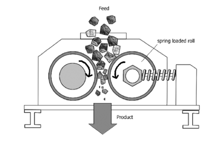

Introduction
A roll crusher is a type of compression crusher used to reduce the size of materials by squeezing and fracturing them between two rotating cylindrical rolls. The rolls are equipped with teeth or crushing elements that exert pressure on the material to break it into smaller fragments. This experiment aims to investigate the crushing performance and efficiency of a roll crusher.
Operation
The operation of a roll crusher involves the following steps:
-
Feed Material: The material to be crushed is fed into the gap between the rolls, typically through a hopper or chute. The material is evenly distributed across the width of the rolls to ensure efficient crushing.
-
Compression and Fracture: As the rolls rotate in opposite directions, the material is drawn into the crushing zone. The rolls exert compressive forces on the material, causing it to deform and fracture. The teeth or crushing elements on the rolls facilitate the breaking process.
-
Product Discharge: The crushed material, known as the product, is discharged from the crusher through a gap between the rolls. The size of the product is determined by the distance between the rolls, the crushing forces applied, and the properties of the material.
Design Considerations
When designing a roll crusher experiment, several factors need to be considered:
-
Roll Design: The size, diameter, and length of the rolls play a critical role in determining the crushing capacity and efficiency of the crusher. The rolls should be designed to ensure proper crushing action and minimize the generation of fines.
-
Feed Material Properties: The properties of the feed material, such as hardness, moisture content, and particle size distribution, affect the performance of the roll crusher. Understanding these properties helps in selecting appropriate roll parameters and optimizing the crushing process.
-
Roll Speed and Gap: The rotational speed of the rolls and the gap between them influence the crushing action and the size of the product. Adjusting the roll speed and gap allows for controlling the desired product size and maximizing the throughput.
Applications
Roll crushers find applications in various industries, including:
-
Mining and Mineral Processing: Roll crushers are used for the primary and secondary crushing of minerals and ores, such as coal, limestone, and iron ore.
-
Aggregate Production: They are used in the production of aggregates for construction purposes, such as crushed stone, gravel, and sand.
-
Chemical Industry: Roll crushers are employed in chemical processing plants to reduce the size of chemicals and raw materials for further processing.
-
Ceramics and Refractories: They are used in the processing of ceramic materials and refractory products, such as clay, shale, and firebrick.
